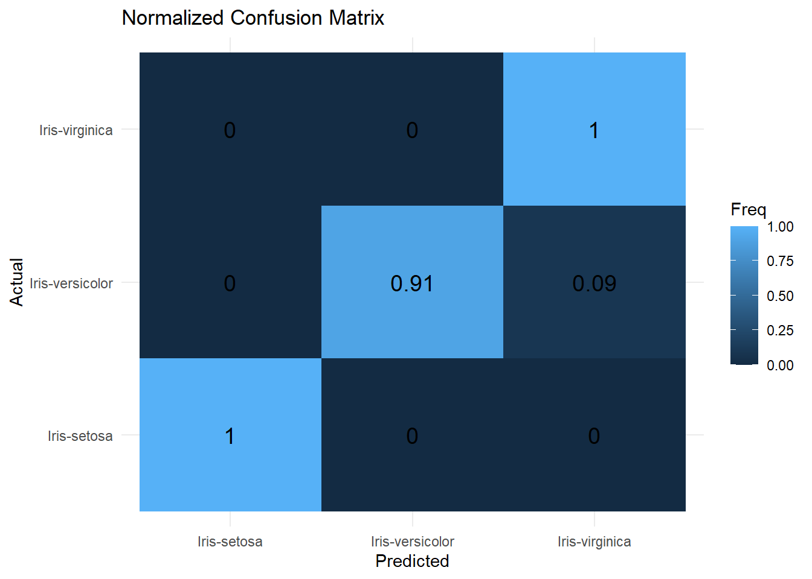

# This notebook only uses base R functions.
# ggplot2 is used only for nicer plots if available.
if (requireNamespace("ggplot2", quietly = TRUE)) {
library(ggplot2)
}Warning: package 'ggplot2' was built under R version 4.4.3Introduction to Statistical Learning
This notebook implements a simple multilayer neural network for classifying flower species in the Iris dataset.
The code is modularized into functions to facilitate understanding and step-by-step execution, following the same structure as the Python lab.
In this lab we build a simple Neural Network, implementing every function from scratch in R.
The problem to be solved is the identification (classification, prediction) of the species of an Iris flower using the dimensions of the petals and sepals.
We follow the usual workflow of a machine learning analysis:
Many of these functions are available in high-level libraries, but here they are written from scratch for illustration purposes.
# Read data from csv.
# The file must be in the working directory.
iris <- read.csv("data/IrisData1.csv", stringsAsFactors = FALSE)
selected_rows <- c(1, 2, 51, 52, 101, 102)
iris[selected_rows, ] Sepal_Length Sepal_Width Petal_Length Petal_Width Species
1 5.1 3.5 1.4 0.2 Iris-setosa
2 4.9 3.0 1.4 0.2 Iris-setosa
51 7.0 3.2 4.7 1.4 Iris-versicolor
52 6.4 3.2 4.5 1.5 Iris-versicolor
101 6.3 3.3 6.0 2.5 Iris-virginica
102 5.8 2.7 5.1 1.9 Iris-virginicaA standard step in the data analysis pipeline is to check the data, in order to detect possible problematic values such as missing data, outliers, or coding mistakes.
verify_dataset <- function(data) {
if (any(is.na(data))) {
stop("Data contain missing values.")
}
cat("Dataset is complete. No missing values. Ok\n")
cat("Class labels:\n")
print(table(data$Species))
}
verify_dataset(iris)Dataset is complete. No missing values. Ok
Class labels:
Iris-setosa Iris-versicolor Iris-virginica
50 50 50 The target variable Species has three categorical classes:
Iris-setosaIris-versicolorIris-virginicaNeural networks require numerical outputs. We therefore transform the class labels into a one-hot encoded matrix.
to_one_hot <- function(labels) {
labels <- as.factor(labels)
classes <- levels(labels)
y <- matrix(0, nrow = length(labels), ncol = length(classes))
colnames(y) <- classes
y[cbind(seq_along(labels), as.integer(labels))] <- 1
return(y)
}
# Example of one-hot encoding for selected rows
to_one_hot(iris$Species[selected_rows]) Iris-setosa Iris-versicolor Iris-virginica
[1,] 1 0 0
[2,] 1 0 0
[3,] 0 1 0
[4,] 0 1 0
[5,] 0 0 1
[6,] 0 0 1The training of neural networks can be negatively affected by input features with very different scales.
To keep this R lab aligned with the Python lab, we use row-wise L2 normalization: each observation is divided by its Euclidean norm.
# Select numeric features
selected_features <- c("Sepal_Length", "Sepal_Width", "Petal_Length", "Petal_Width")
X <- as.matrix(iris[, selected_features])
X <- normalize_rows(X)
# One-hot encode the outcome
Y <- to_one_hot(iris$Species)
# Show normalized features and encoded outcome for selected rows
X[selected_rows, ] Sepal_Length Sepal_Width Petal_Length Petal_Width
[1,] 0.8037728 0.5516088 0.2206435 0.03152050
[2,] 0.8281329 0.5070201 0.2366094 0.03380134
[3,] 0.7670110 0.3506336 0.5149931 0.15340221
[4,] 0.7454976 0.3727488 0.5241780 0.17472599
[5,] 0.6538775 0.3425072 0.6227404 0.25947519
[6,] 0.6905251 0.3214514 0.6071859 0.22620651 Iris-setosa Iris-versicolor Iris-virginica
[1,] 1 0 0
[2,] 1 0 0
[3,] 0 1 0
[4,] 0 1 0
[5,] 0 0 1
[6,] 0 0 1split_dataset_test_train <- function(X, Y, train_size = 0.7, seed = 123456) {
set.seed(seed)
n <- nrow(X)
idx <- sample(seq_len(n))
n_train <- floor(train_size * n)
train_idx <- idx[seq_len(n_train)]
test_idx <- idx[(n_train + 1):n]
list(
X_train = X[train_idx, , drop = FALSE],
Y_train = Y[train_idx, , drop = FALSE],
X_test = X[test_idx, , drop = FALSE],
Y_test = Y[test_idx, , drop = FALSE]
)
}train_test_data <- split_dataset_test_train(X, Y, train_size = 0.7, seed = 123456)
X_train <- train_test_data$X_train
Y_train <- train_test_data$Y_train
X_test <- train_test_data$X_test
Y_test <- train_test_data$Y_test
X_train[1:6, ] Sepal_Length Sepal_Width Petal_Length Petal_Width
[1,] 0.7246023 0.3762358 0.5434518 0.19508524
[2,] 0.8609386 0.4400353 0.2487156 0.05739590
[3,] 0.7171815 0.3164036 0.5800733 0.22148252
[4,] 0.7152945 0.3179087 0.5960788 0.17882363
[5,] 0.7365989 0.3381110 0.5675435 0.14490471
[6,] 0.8053331 0.5483119 0.2227517 0.03426949 Iris-setosa Iris-versicolor Iris-virginica
[1,] 0 1 0
[2,] 1 0 0
[3,] 0 0 1
[4,] 0 0 1
[5,] 0 1 0
[6,] 1 0 0The network is trained by a succession of forward and backward steps, continuously adjusting the model parameters to minimize the loss.
This process is repeated over multiple epochs until convergence or a stopping criterion is met.
sigmoid <- function(x) {
1 / (1 + exp(-x))
}
sigmoid_deriv_from_activation <- function(a) {
# If a = sigmoid(z), then sigmoid'(z) = a * (1 - a)
a * (1 - a)
}
softmax <- function(x) {
# Numerically stable softmax, applied row-wise
x_shift <- x - apply(x, 1, max)
exp_x <- exp(x_shift)
exp_x / rowSums(exp_x)
}Forward propagation computes the activations in each layer of the network.
For a network with one hidden layer:
\[ Z_h = XW_0 + b_0, \qquad A_h = \sigma(Z_h) \]
\[ Z_o = A_h W_1 + b_1, \qquad A_o = \operatorname{softmax}(Z_o) \]
where \(A_h\) and \(A_o\) are respectively the hidden-layer and output-layer activations.
Backpropagation propagates the error backward to adjust weights using gradient descent.
For the output layer with softmax and cross-entropy:
\[ \delta_o = A_o - Y \]
For the hidden layer:
\[ \delta_h = (\delta_o W_1^T) \odot \sigma'(Z_h) \]
Since the function below receives \(A_h = \sigma(Z_h)\), we use:
\[ \sigma'(Z_h) = A_h(1-A_h) \]
update_weights <- function(X, A_h, delta_o, delta_h, W0, b0, W1, b1, learning_rate) {
W1 <- W1 - learning_rate * (t(A_h) %*% delta_o)
b1 <- b1 - learning_rate * colSums(delta_o)
W0 <- W0 - learning_rate * (t(X) %*% delta_h)
b0 <- b0 - learning_rate * colSums(delta_h)
list(W0 = W0, b0 = b0, W1 = W1, b1 = b1)
}Before training the network, weights and biases must be initialized.
Weights are randomly initialized to break symmetry in learning.
initialize_network <- function(input_size, hidden_size, output_size, seed = 654321) {
set.seed(seed)
W0 <- matrix(runif(input_size * hidden_size, min = -1, max = 1),
nrow = input_size, ncol = hidden_size)
W1 <- matrix(runif(hidden_size * output_size, min = -1, max = 1),
nrow = hidden_size, ncol = output_size)
b0 <- rnorm(hidden_size)
b1 <- rnorm(output_size)
list(W0 = W0, b0 = b0, W1 = W1, b1 = b1)
}After setting the weights to their initial values, the neural network is trained by iterating over the data.
At each epoch and batch:
The process stops when convergence or a fixed number of epochs is reached.
train_neural_network <- function(X_train, Y_train, epochs, learning_rate, batch_size, params) {
W0 <- params$W0
b0 <- params$b0
W1 <- params$W1
b1 <- params$b1
num_samples <- nrow(X_train)
num_batches <- ceiling(num_samples / batch_size)
loss_history <- c()
for (epoch in seq_len(epochs)) {
for (batch_idx in seq_len(num_batches)) {
batch_start <- (batch_idx - 1) * batch_size + 1
batch_end <- min(batch_idx * batch_size, num_samples)
X_batch <- X_train[batch_start:batch_end, , drop = FALSE]
Y_batch <- Y_train[batch_start:batch_end, , drop = FALSE]
# Forward propagation
fwd <- forward_propagation(X_batch, W0, b0, W1, b1)
# Backpropagation
bp <- backpropagation(X_batch, Y_batch, fwd$A_h, fwd$A_o, W1)
# Weight update
updated <- update_weights(X_batch, fwd$A_h, bp$delta_o, bp$delta_h,
W0, b0, W1, b1, learning_rate)
W0 <- updated$W0
b0 <- updated$b0
W1 <- updated$W1
b1 <- updated$b1
}
# Compute loss every 100 epochs, and also at the first epoch
if (epoch == 1 || epoch %% 100 == 0) {
fwd_all <- forward_propagation(X_train, W0, b0, W1, b1)
loss <- cross_entropy_loss(Y_train, fwd_all$A_o)
loss_history <- c(loss_history, loss)
cat(sprintf("Epoch %d, Loss: %.4f\n", epoch, loss))
}
}
list(params = list(W0 = W0, b0 = b0, W1 = W1, b1 = b1),
loss_history = loss_history)
}We set:
Additionally, we set the training hyperparameters:
trained <- train_neural_network(
X_train = X_train,
Y_train = Y_train,
epochs = epochs,
learning_rate = learning_rate,
batch_size = batch_size,
params = my_params
)Epoch 1, Loss: 1.1186
Epoch 100, Loss: 0.6773
Epoch 200, Loss: 0.4333
Epoch 300, Loss: 0.3355
Epoch 400, Loss: 0.2605
Epoch 500, Loss: 0.2110
Epoch 600, Loss: 0.1795
Epoch 700, Loss: 0.1587
Epoch 800, Loss: 0.1443
Epoch 900, Loss: 0.1340
Epoch 1000, Loss: 0.1263evaluate_network <- function(params, X_test) {
fwd <- forward_propagation(X_test, params$W0, params$b0, params$W1, params$b1)
# Return class index for each row
max.col(fwd$A_o, ties.method = "first")
}
y_pred <- evaluate_network(trainedNet, X_test)
y_actual <- max.col(Y_test, ties.method = "first")
cm <- table(
Actual = colnames(Y_test)[y_actual],
Predicted = colnames(Y_test)[y_pred]
)
cm Predicted
Actual Iris-setosa Iris-versicolor Iris-virginica
Iris-setosa 15 0 0
Iris-versicolor 0 10 1
Iris-virginica 0 0 19 Predicted
Actual Iris-setosa Iris-versicolor Iris-virginica
Iris-setosa 1.000 0.000 0.000
Iris-versicolor 0.000 0.909 0.091
Iris-virginica 0.000 0.000 1.000if (requireNamespace("ggplot2", quietly = TRUE)) {
df_cm <- as.data.frame(cm_norm)
ggplot(df_cm, aes(x = Predicted, y = Actual, fill = Freq)) +
geom_tile() +
geom_text(aes(label = round(Freq, 2)), size = 5) +
labs(title = "Normalized Confusion Matrix", x = "Predicted", y = "Actual") +
theme_minimal()
} else {
image(as.matrix(cm_norm), main = "Normalized Confusion Matrix")
}
The following function normalizes a new observation using the same row-wise normalization used during training and returns the predicted species.
predict_species <- function(params, measurements) {
measurements <- matrix(as.numeric(measurements), nrow = 1)
measurements_norm <- normalize_rows(measurements)
fwd <- forward_propagation(measurements_norm, params$W0, params$b0, params$W1, params$b1)
predicted_class <- which.max(fwd$A_o[1, ])
list(
probabilities = fwd$A_o,
predicted_species = colnames(Y)[predicted_class]
)
}
# Example
predict_species(trainedNet, c(5.1, 3.5, 1.4, 0.2))$probabilities
Iris-setosa Iris-versicolor Iris-virginica
[1,] 0.9906671 0.009332905 4.06061e-09
$predicted_species
[1] "Iris-setosa"